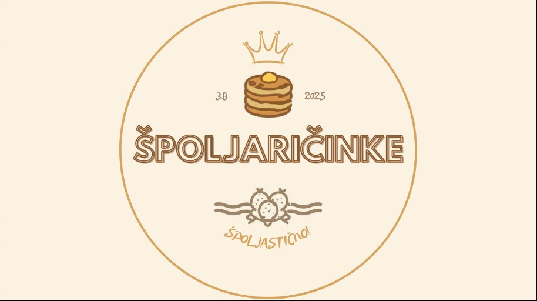

Zapisnik radionice — projekt izrade mrežnog sjedišta za palačinkarnicu Špoljaričinke.

Naručitelji su tražili krem stil — ugodan, svijetao dizajn s mekim bojama koji podsjeća na opuštajuće okruženje, a istovremeno izgleda moderno i uredno. Portfolio palačinki mora biti uokviren zaobljenim rubovima kako bi sve izgledalo čisto i privlačno.
Matej — stranica se dizajnira isključivo za računala (desktop verzija).
Marin — fokus je na frontendu (HTML i CSS) bez pozadinske baze podataka. Gumb "Naruči" bit će animiran, ali bez stvarne funkcije.
David — navigacija će biti fiksna i nenametljiva, s fontovima koji prate nježni i čisti stil stranice.
Tople, pastelne nijanse koje asociraju na palačinke i ugodno okruženje.
| Stranica | Sadržaj | Napomene |
|---|---|---|
| Naslovnica | Velika slika s logotipom i informacijama | Hero sekcija s CTA gumbom |
| Jelovnik | Pregled palačinki u karticama s mekim sjenama | Grid raspored, bež kartice |
| O nama | Tekst o priči palačinkarnice | Narativni stil |
| Narudžba | Vizualni gumbi za narudžbu | Animirani, nefunkcionalni (bez SQL) |
Gumbi za narudžbu su animirani i vizualno upotpunjuju dizajn, ali nefunkcionalni jer projekt koristi isključivo HTML i CSS, bez backend sustava i SQL baze podataka.